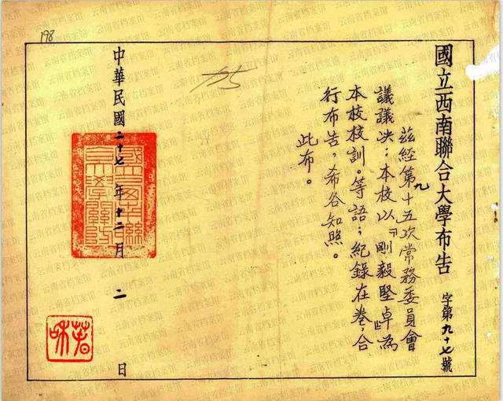
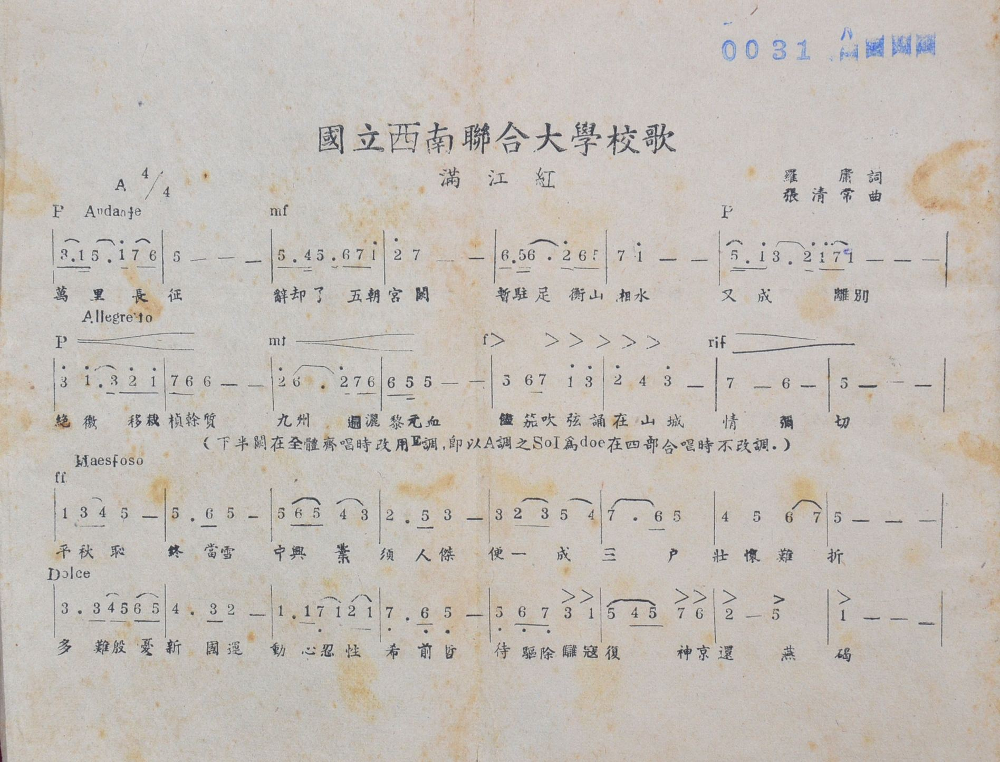

·School Motto
On December 2, 1938, the 95th Standing Committee of the National Southwestern United University resolved to adopt the motto of "Fortitude and Perseverance" and made a public announcement.

Announcement of NSAU's motto:
"Fortitude and Perseverance"
The "fortitude" in "fortitude and perseverance" requires students and faculty to be selfless and fearless, that is, "no desire is rigid", to maintain their own subjectivity toward the material world or others, and at the same time The "firmness" requires students and teachers to be firm, hardworking and self-motivated, diligent in their studies, and successful in their careers, but not in their fame, fortune, or status, and not to be teachers of others, but to be humble and kind, to treat others with sincerity, to follow good advice, and to be able to The goal is to maintain human subjectivity. The goal is to maintain human subjectivity, human dignity, and human value, and to fully embody the humanistic spirit of the university.
·School Song

"NSAU School Song Main Tune"
composed by Chang Ching Chang
In October 1938, the 89th Standing Committee of NSAU resolved to hire Feng Youlan, Zhu Ziqing, Wen Yiduo, Luo Yong, and Luo Changpei as members of the committee to compile the school song, and asked Feng Youlan to be the chairman of the committee.On October 30, the school song committee discussed using Luo Yong's words as the lyrics of the school song, but asked Zhang Qingchang, a graduate student of the Chinese Department of Tsinghua University, who had already graduated, to compose the music. Zhang Qingchang, who was in Yishan, Guangxi, sent the finished score to the song committee in December, which was unanimously approved and became the score of the National Southwest United University song.
You can try playing the audio on the left to enjoy this impassioned school song.
Lyrics:The long march of ten thousand miles, resigned from the five dynasties palace, temporarily stationed in Hengshan and Hunan, and became parting. The last resort is to transplant the quality of the sedge, and the blood of the Yuan is sprinkled all over our country. All the reed blowing, reciting in the mountain city, love. The vengeance of a thousand years will finally be executed. We need people to make a successful career. Even if the condition is hard, the ambition is hard to break. We are worried about the new nation's luck, and we are willing to endure our former philosophers. When the enemy is expelled, the sacred capital will be restored.
·Logo & Flag

Logo
The outline of the emblem is an equilateral triangle with the word "United University" written on it, and the three small corners of the design form a large triangle, and the three small corners are the school colors of Tsinghua and Nankai, respectively, and the school color of Peking University, black. The solidity of the triangle and the sharp edges represent the NSAU motto "fortitude and perseverance", which means that the three universities are united and overcome difficulties together.

Flag
The flag of the NSAU is rectangular in shape, with a purple isosceles triangle (the school colors of Nankai and Tsinghua are purple), 4'6" high and 2'6" wide at the bottom, with the words "National Southwest United University" in black on the triangle (the school color of Peking University is black), and a white right-angle triangle on each waist of the triangle. The flag shown here was hand-embroidered in 1941 by the wife of Mr. John Ma, then director of NSAU's athletic department.
·Student Clubs


There are many clubs in NSAU, which can be classified into general and specialized clubs according to their functions, involving more than ten kinds of fields such as drama, sports, and debate.
>NSAU adopts the principle of student autonomy in the management of student associations. There is no interference in all aspects of the declaration, approval, and establishment of student clubs. Associations are completely required for student autonomy.
The political nature of the societies was reflected in their activities, which were the study and propaganda of communism and the Communist Party and the active propaganda against the war. The "Voice of the Group" of the society actively propagates the Party's "insistence on resistance and opposition to surrender" and "insistence on unity and opposition to division".
You can see the vibrant NSAU students, led by their clubs, in the pictures.